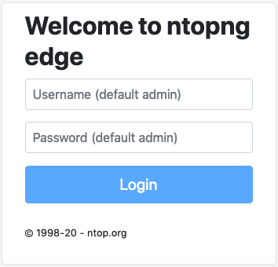
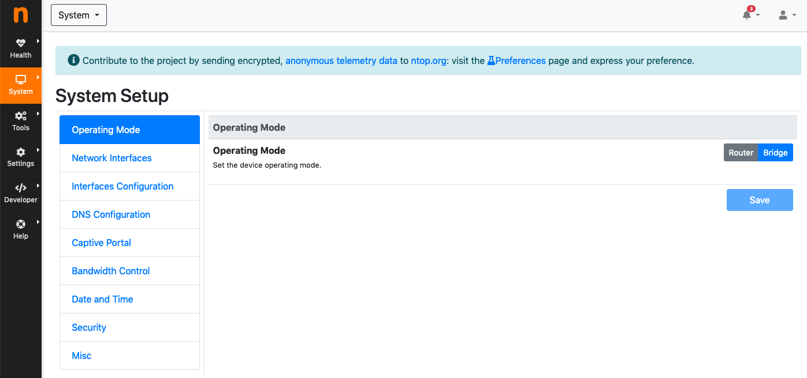

Начиная
nEdge можно установить на Ubuntu 24 LTS с помощью apt, поэтому необходимо настроить репозиторий ntop, следуя инструкциям инструкции на http://packages.ntop.org . После настройки репозитория nEdge можно устанавливается с помощью следующих команд:
apt-получить обновление
apt-get установить Недж
Примечание
nEdge требует как минимум два проводных сетевых интерфейса чтобы бежать.
Предупреждение
nEdge будет изменить конфигурацию системы устройства, на котором оно установлено. Исходный файл конфигурации сети хранится в /etc/netplan/*.yaml.old. Пакет nEdge принудительно удалит сетевой менеджер, поскольку он конфликтует с операцией nEdge.
Первый старт
Любое изменение конфигурации осуществляется из GUI требует явного подтверждения перед применением. Некоторые изменения могут потребовать перезагрузки устройства.
После установки пакета nEdge запустится автоматически. Веб-сайт nEdge GUI будет доступен через порт 3000. Например, если устройство имеет IP-адрес 192.168.1.10, nEdge GUI будет доступен по URL-адресу. http://192.168.1.10:3000. Chrome, Firefox и Safari — официально поддерживаемые веб-браузеры.

Экран входа в nEdge
Учетные данные для доступа к GUI в первый раз являются пользовательскими. администратор и пароль администратор.
После первого входа в систему GUI посетите системный интерфейс и получите доступ к настройкам системы. Первое, на что следует обратить внимание, это Режим работы. Следующие режимы работы доступны:

Выбор режима работы nEdge
Режим моста: обеспечивает минимальную настройку и простую интеграцию с существующей сетью.
Режим маршрутизатора: обеспечивает расширенную маршрутизацию с использованием нескольких шлюзов.
После выбора режима работы необходимо определить, какие сетевые интерфейсы доступные в системе будут использоваться в качестве интерфейсов WAN или LAN. В случае маршрутизатор В этом режиме из списка множественного выбора можно выбрать несколько интерфейсов WAN.

Выбор ролей сетевых интерфейсов
ПРИМЕЧАНИЕ: список интерфейсов, доступных в nEdge, основан на сетевых интерфейсах доступен в системе на момент первого запуска. После удаления или добавления новый сетевой интерфейс к системе, требуется сброс к заводским настройкам чтобы сделать это доступен в nEdge GUI.
В зависимости от выбранной настройки, Конфигурация сети предоставим интерфейсы конфигурация. Для режима моста необходима только настройка локальной сети. В маршрутизаторе режиме необходимы конфигурации как LAN, так и WAN. Сеть LAN и WAN адреса не должны конфликтовать.

Конфигурация локальной сети
Важно запомнить настроенный адрес локальной сети, как будет необходимо для доступа к nEdge GUI после перезагрузки. В режиме моста, когда локальная сеть установлен в режиме клиента DHCP, необходимо просмотреть журнал сервера DHCP или другой инструменты, чтобы после перезагрузки выяснить IP-адрес, присвоенный локальной сети.
После настройки базовой конфигурации нажмите кнопку Применять кнопка вверху страницы, чтобы написать конфигурацию системы на диск и перезагрузите устройство. После перезагрузки устройство nEdge будет доступно по настроенному адресу локальной сети. порт 3000.
В случае проблем с подключением к устройству устройство nEdge должно оставаться доступным. через адрес восстановления, как описано в устройстве восстановление раздел.
Запуск в виртуальную машину
Чтобы запустить nEdge на виртуальной машине, необходимо использовать функцию PCI Passthrough. должен быть включен в гипервизоре виртуальной машины. PCI Passthrough предоставит гостю виртуальной машины полный контроль над физическим сетевым интерфейсом.
Вот руководство по включению его на некоторых платформах виртуализации: https://www.ntop.org/guides/pf_ring/vm/virsh_hostdev.html .
Примечание
Ссылка выше — это всего лишь ссылка на настройку Passthrough. PF_RING ZC будет быть бесполезным с nEdge.